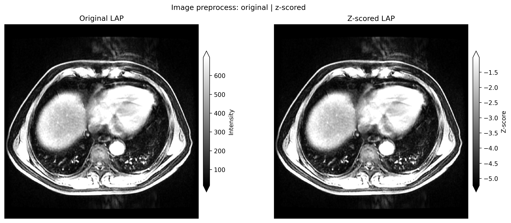
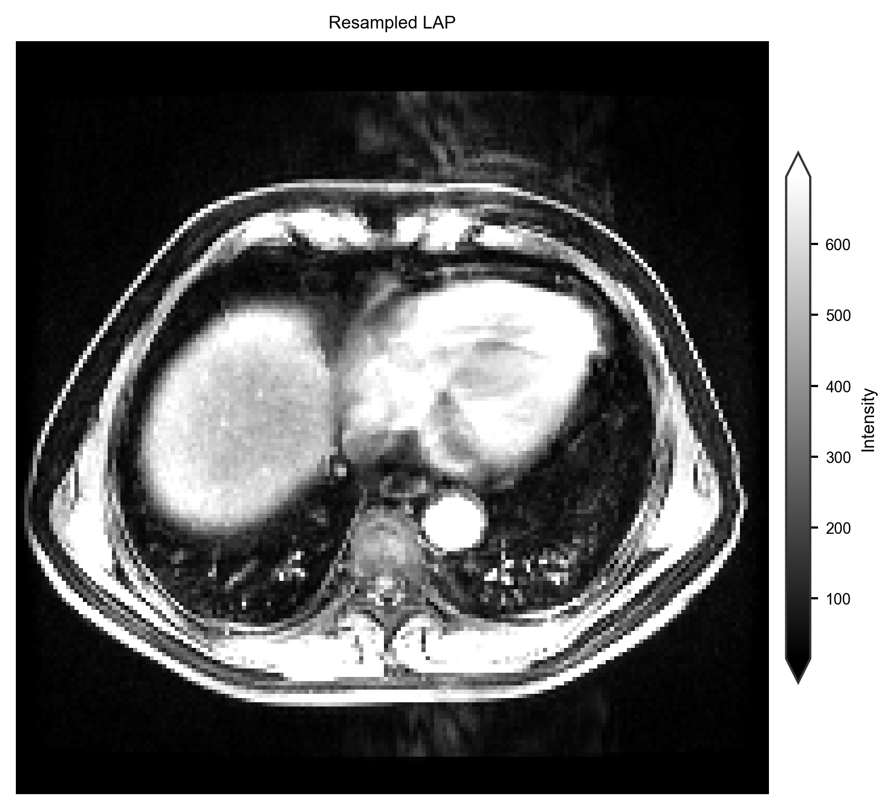
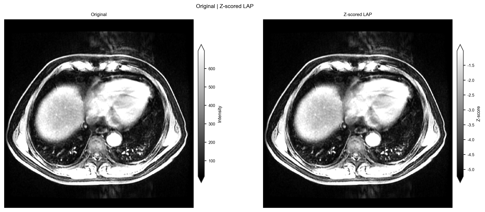
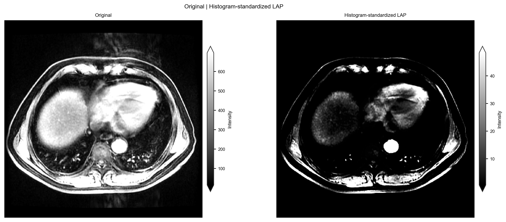
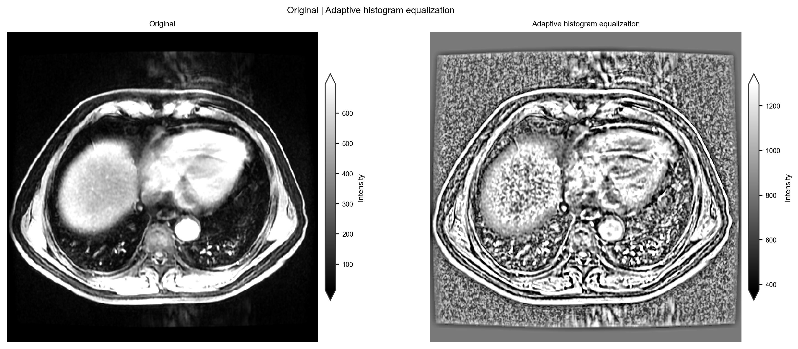
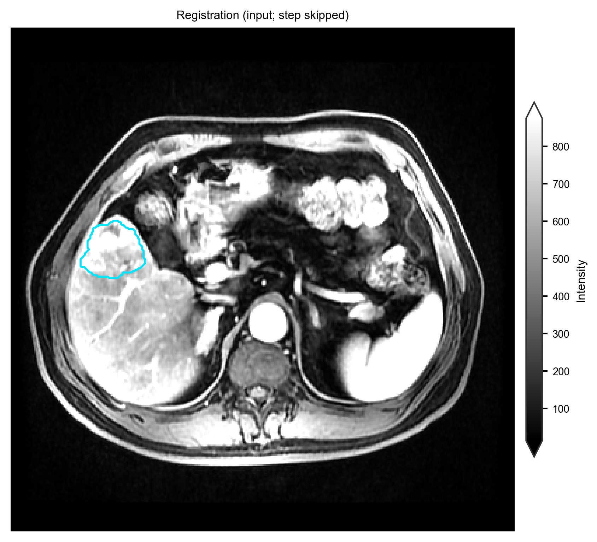

之前：图像预处理#
备注
支持性集成，非生境核心。生境分析要求受试者各序列与 ROI 掩膜在同一体素网格（配准 / 重采样），本页为此准备。演示包已预处理——生境图：用 Spec 的两步法生境 。聚类强度归一化是生境阶段而非图像步骤：见 Concepts 。
目标：将图像（或 DICOM）转为预处理 images/ + masks/ 树。
首次演示运行： skip this page — the demo pack already has demo_data/preprocessed/. Go to 用 Spec 的两步法生境.
Run#
habit check-config --config config/preprocessing/config_preprocessing_demo.yaml
habit preprocess --config config/preprocessing/config_preprocessing_demo.yaml
更快冒烟:
habit preprocess --config config/preprocessing/config_preprocessing_minimal.yaml
DICOM 辅助:
habit dicom-info -i demo_data/dicom -o demo_data/results/htg_dicom_info.csv --one-file-per-folder
habit sort-dicom --config config/dicom_sort/config_sort_dicom.yaml
你的数据#
在复制的 YAML 中编辑 ★： data_dir （文件夹或路径列表 YAML）、 out_dir 与模态名。然后 habit check-config + habit preprocess 。
成功： out_dir/processed_images/images/<subject>/<modality>/ 含 NIfTI。
解剖 | 处理后强度。图由图像预处理 gallery 生成（之前：图像预处理 ）。复现:
python docs/source/examples/scripts/image_preprocessing_demo.py
该脚本中的绘图调用：:
from habit.viz import plot_intensity_slice
fig = plot_intensity_slice(
processed.image(modality),
before=subject.image(modality),
axis=0,
cmap="gray",
image_label="Z-scored LAP",
before_label="Original LAP",
title="Image preprocess: original | z-scored",
colorbar_label="Z-score",
before_colorbar_label="Intensity",
)


subj001 LAP 全 FOV 灰度 z-score 面板（ demo_data/preprocessed ）。独立 colorbar 显示 raw 与 z-score（原生单位；非共享 \([0, 1]\) 窗）。#
Image z-score here is per-volume intensity (DICOM/NIfTI tree). It is not the 聚类-time winsorize / minmax chain; skipping that chain on 两步法 runs under-expresses 生境 — see 受试者级预处理.
原子 Python（相同步骤，无 YAML）#
preprocess_subject() / preprocess_image() 接受 Subject 或单个体积。从 之前：图像预处理 复制并替换 DATA 。逐步图：


重新采样（全视野， subj001 LAP）。#


Z-score（全卷；可选 ROI 统计）。独立色条显示 raw 强度与 z-score。#

N4 偏场校正。独立的颜色条保持强度刻度可见。#


Nyúl 直方图标准化。独立色条显示映射强度范围。#


自适应直方图均衡。独立 colorbar 显示强度刻度。#

重定向为 RAS。#


SimpleITK 仿射配准（ROI 轮廓随变换）。#
dcm2nii 仅 CLI（需要 DICOM 树）:
habit preprocess --config config/preprocessing/config_preprocessing_dcm2nii_demo.yaml
下一步：生境分割（CLI / YAML） 。